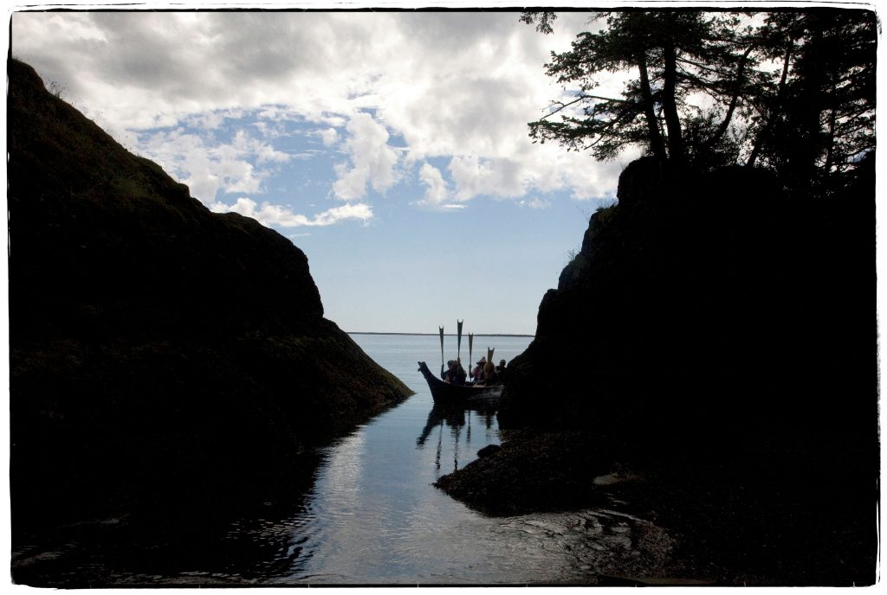

Click on the links below to support the Chinnook people

photo by Amiran White
Our Commitment To The Chinook Nation
Before moving too far ahead in our cultivation as a community which gathers and harvests on Chinook lands, its important to us to amplify the voices of the Chinook Nation and to do what we can to support them in their ongoing efforts to regain their right to federal recognition
In (very) brief summary
The Chinook Tribe went without federal recognition from 1851 to 2001. Then in 2001, thanks to the sustained effort of the tribe, they finally became a federally recognized tribe, eligible for all the resources and funding that recognition status would entail
Shortly after, the Quinault Tribe filed an appeal in opposition to the federal recognition of the Chinook Tribe, arguing against their status and claiming that recognition of the Chinook could potentially negatively impact their own reservation lands and resources.
Consequently, their recognition was rescinded
And while the Chinook Peoples find themselves traversing yet another round of court proceedings and legal petitions in an effort to gain federal recognition, they are a people who have never left their ancestral lands and who will not be deterred in their work of honoring their ancestors and fighting for the rights of their descendants
The Chinook people offer us many lessons in resilience, patience,
and maintaining sustained focus for over 173 years